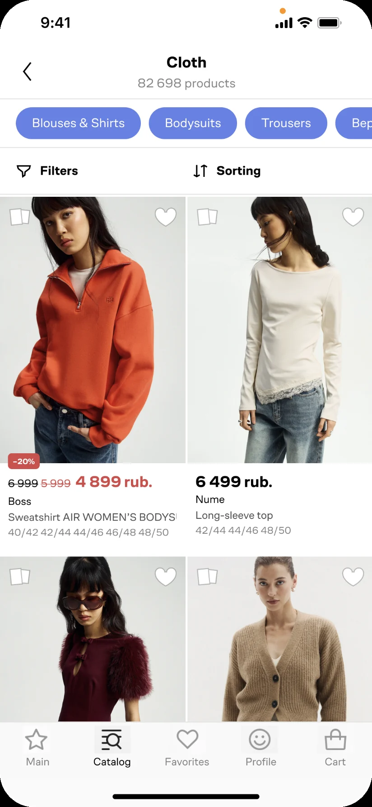
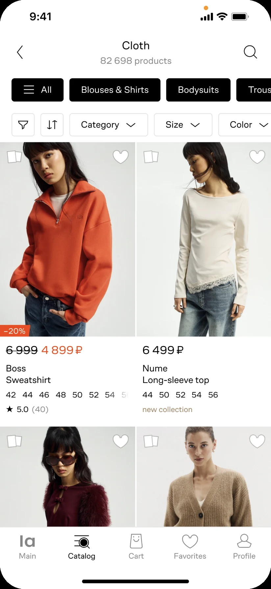

Redesign catalog
Introduction
As part of the app redesign, I also worked on product improvements to the catalog.
I independently defined development tasks, planned and ran A/B tests, analyzed the results together with data analysts, and rolled out successful changes to 100% of users in agreement with the Catalog Product Owner.
My hypotheses
- Users found it difficult to browse categories horizontally. I noticed this during user interviews
- Showing three prices at once created too much cognitive load when choosing a product
- Did users really need to see available sizes at this stage? I planned to test removing them through an A/B test
- The cart and profile icons were in unfamiliar positions. Users could accidentally cover the cart with their finger and forget about it while using the app
- The active tab icon did not clearly show which section was selected
What I did
- Added a “All” button when there were too many categories, allowing users to select a category from a separate list
- Changed the category colors and worked with a developer to create a new component
- Ran a negative A/B test to check whether we could remove sizes from the catalog. We received many complaints in the App Store, so I stopped the test
- Reduced the number of displayed prices from three to two, increased their font size, and added the ruble symbol
- Improved the typography and spacing of product cards
- Designed new badges and defined their display order
- Changed the tab bar layout: moved the cart to the center and the profile to the right
- Redesigned all tab bar icons
Results
- I ran four A/B tests covering category navigation, product cards, and tab bar changes to measure the impact of each change separately
- Users became more active in selecting product categories. Although the A/B test results were inconclusive, we kept the new functionality because it made category navigation more convenient
- Product page visits increased, partly thanks to changes to prices and sizes. NMV grew by 0.8%
- Cart visits increased by 2%

